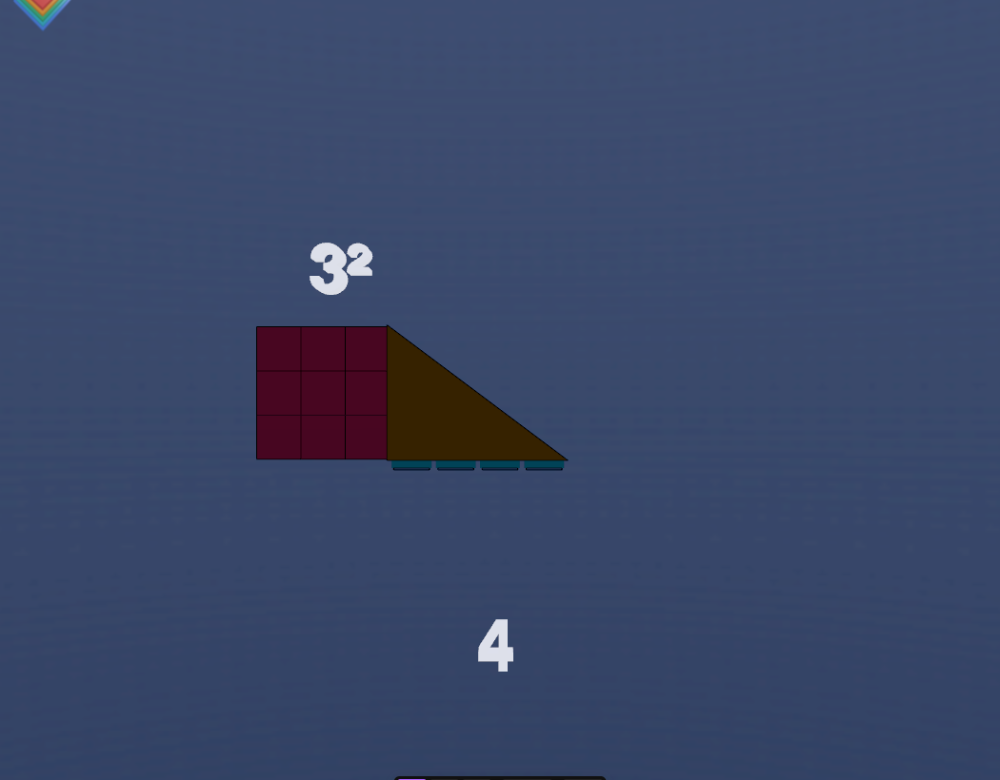
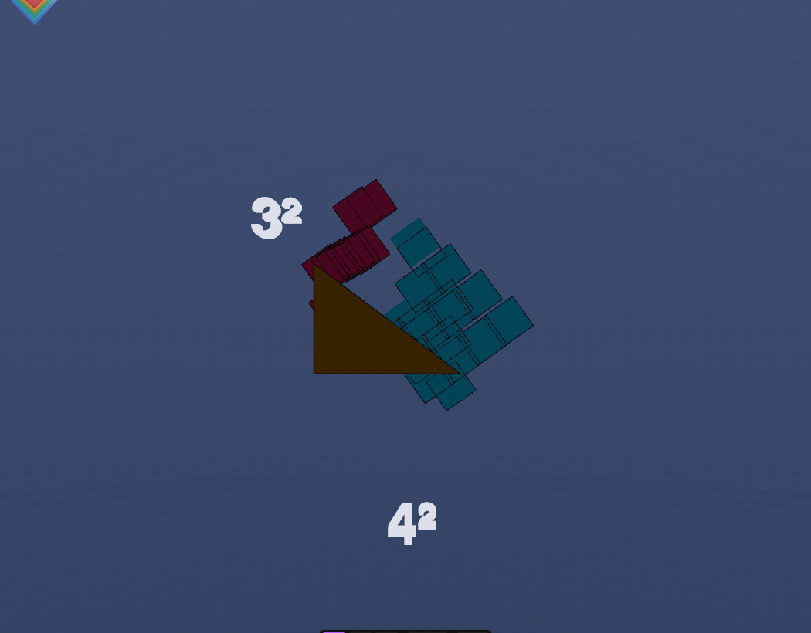
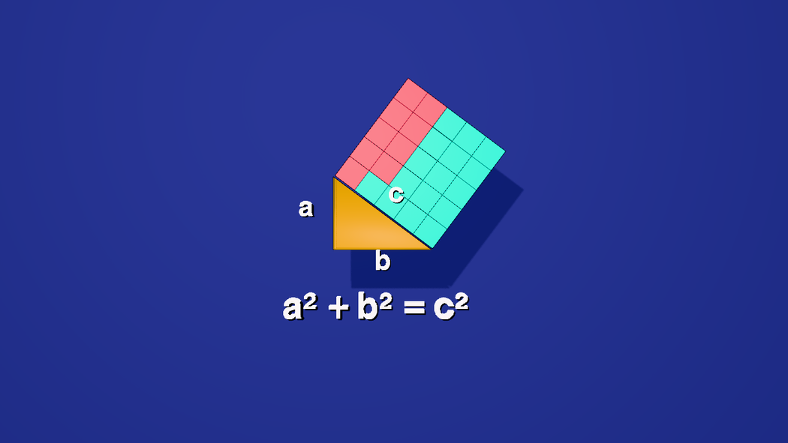
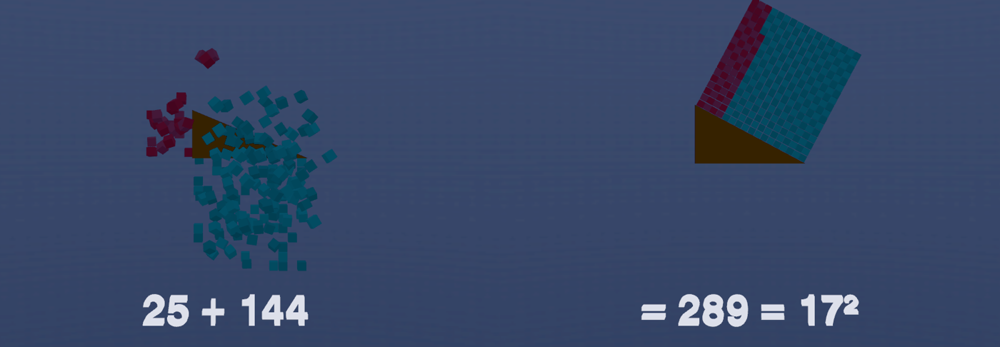
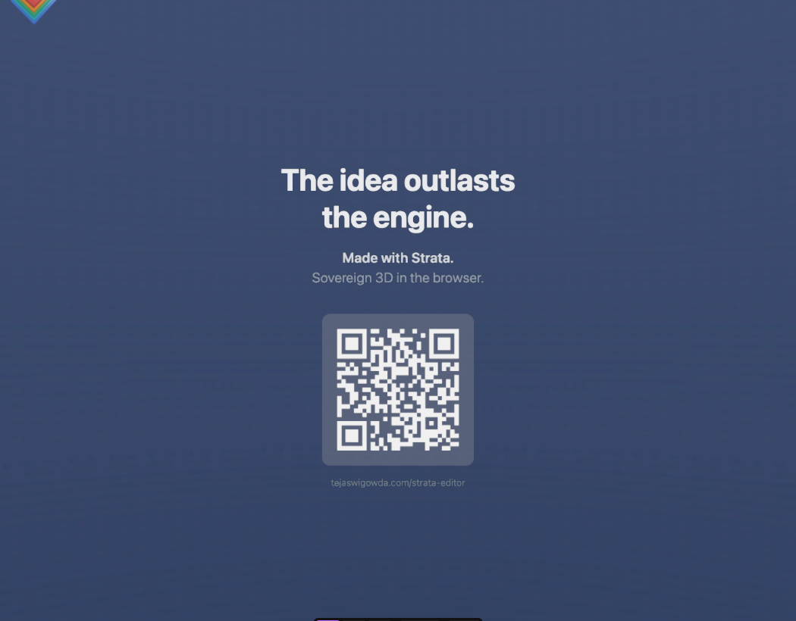

Make a Pythagorean-theorem short
A two-minute proof that 3² + 4² = 5², with subtitles. It starts with fifty tiles, one triangle and three labels; then the camera makes quarter turns to show two more triples, 5-12-13 and 8-15-17, and a last one to an end card. It is built entirely by hand, no AI, with the JS Shell and the Universal Timeline. Open the editor, open the Shell tab, and paste each block in order — or open the finished scene, pyth.json (step 13).
editor.execute(...) under the hood) — the Shell is just the fastest way to author them. You can always inspect or hand-tweak the result afterward in the Outliner/Object panel; nothing here is a special "script mode."$S('#three'), $S('.cube')). Start from an empty scene.1 Build the three squares out of tiles
The proof needs the squares to come apart and go back together, so each one is made of unit tiles instead of one big box. A tile is a 1×1×1 cube, so it reads as a solid block from any side when it tumbles later. Tiles sit in a row or a column group, and the group sits in a square group: #3x3-square › #3col1 › cube_3.1.1. That nesting is what lets the timeline say "the first column of the 3×3" later.
// A square of side n is n lines (rows or columns) of n tiles. Each tile is a
// 1 x 1 x 1 cube; each line is its own group so the timeline can address it.
function makeSquare(n, name, color, kind, place) {
const square = new Group();
square.name = name;
for (let k = 1; k <= n; k++) {
const line = new Group();
line.name = `${n}${kind}${k}`;
for (let m = 1; m <= n; m++) {
const tile = new Mesh(
new BoxGeometry(1, 1, 1),
new MeshStandardMaterial({ color, roughness: 0.6, metalness: 0.2 })
);
tile.name = `cube_${n}.${k}.${m}`;
tile.position.set(...place(k, m), 0);
tile.castShadow = tile.receiveShadow = true;
tile.userData.hasEdgeOutline = true; // black border, drawn by the viewport
line.add(tile);
}
square.add(line);
}
editor.execute(new AddObjectCommand(editor, square));
return square;
}
// 3x3 on the vertical leg: columns, column 1 touches the triangle.
makeSquare(3, '3x3-square', 0xff6b6b, 'col', (k, m) => [1 - k, 3 - m]);
// 4x4 under the horizontal leg: rows, row 1 touches the triangle.
makeSquare(4, '4x4-square', 0x4ecdc4, 'row', (k, m) => [m, -k]);
// 5x5 on the hypotenuse: built upright, then turned onto the slope.
const big = makeSquare(5, '5x5-square', 0x333300, 'row', (k, m) => [m - 0.5, 5.5 - k]);
big.position.set(4.5, -0.5, 0);
big.rotation.z = Math.atan2(4, 3); // 53.13 degrees, the angle of the 3-4-5 triangleGive everything an addressable class — squares, lines and tiles — so selectors like #3x3-square #3col1 .cube and .cube work. Class names are stored lowercase, so use lowercase everywhere:
$S('#3x3-square, #4x4-square, #5x5-square').addClass('square');
$S('#3x3-square > *').addClass('col');
$S('#4x4-square > *, #5x5-square > *').addClass('row');
$S('#3x3-square > * > *, #4x4-square > * > *, #5x5-square > * > *').addClass('cube');
$S('.cube').nodes.filter(n => n.name.startsWith('cube_')).length // 50 tiles: 9 + 16 + 25$S('.cube').nodes.length says 100, not 50: the 50 tiles and their 50 borders. That is harmless — the borders follow their tiles through every fade and flight, and moveToEach pairs borders with borders in the same order — but it is why the check above filters by name.2 Add the right triangle
Legs 4 and 3, one unit thick, with its right angle on the corner the 3×3 and the 4×4 share. The 5×5 sits on the long side.
const tri = new Mesh(
new ExtrudeGeometry(
new Shape([new Vector2(0, 0), new Vector2(4, 0), new Vector2(0, 3)]), // legs 4 and 3
{ depth: 1, bevelEnabled: false }
),
new MeshStandardMaterial({ color: 0xd99b30, roughness: 0.9, metalness: 1 })
);
tri.geometry.translate(0, 0, -0.5); // centre the 1-unit thickness on z = 0
tri.name = 'RightTriangle';
tri.position.set(0.5, -0.5, 0); // right angle sits at the corner the squares share
tri.castShadow = tri.receiveShadow = true;
tri.userData.hasEdgeOutline = true;
editor.execute(new AddObjectCommand(editor, tri));
3 Three text labels
Text isn't scriptable from the Shell directly (font loading needs the UI's loader) — use the Text stencil three times, then rename each one. This is the one click-driven step before the camera.
- Open Stencils → Mesh → Text and click it three times. You get three objects, each reading "THREE.JS".
- Select the first. In the Object panel set Name to
three. Select the second and name itfour, the thirdeqn.
You never set their text in the panel. Every word they show comes from .change() events on the timeline, so the placeholder "THREE.JS" is overwritten at 0 s. Position them and give them a class like anything else:
$S('#three').moveTo(-1, 3.1, 1.24); // beside the top of the vertical leg
$S('#four').moveTo(5.6, -0.8, 1.24); // beside the end of the horizontal leg, clear of the subtitles
$S('#eqn').moveTo(-1.3, -3.1, 1.24); // where the sum will be assembled, above the subtitle band
$S('#three, #four, #eqn').addClass('label');4 Background and a glow for the text
makeTexture is a Shell helper — hand it a function that paints a 2D canvas, and it returns a ready-to-use texture. The default environment lights the scene from the background, so ask for it to be rebuilt once the background changes, otherwise the tiles keep the old, brighter lighting. Text lit only by scene lights goes faint on a dark ground, so give the labels some light of their own:
scene.background = makeTexture((ctx, size) => {
const g = ctx.createLinearGradient(0, 0, 0, size);
g.addColorStop(0, '#1b2340');
g.addColorStop(0.55, '#141a2e');
g.addColorStop(1, '#0a0d18');
ctx.fillStyle = g;
ctx.fillRect(0, 0, size, size);
}, 512);
setEnvironment('Default'); // rebuild the image-based lighting from the new background
// text lit only by scene lights goes faint on a dark ground: give it a glow of its own
$S('.label').nodes.forEach(o => {
o.material.emissive = new Color(0xffffff);
o.material.emissiveIntensity = 0.7;
o.material.needsUpdate = true;
});
// white text over a bright tile needs an edge: a black drop shadow, offset down and to the right
$S('.label').nodes.forEach(o => { o.userData.textShadow = true; });The shadow is a black copy of the label that the editor draws behind it and keeps in step with it: it follows every change(), every fade and every move, so it needs no keyframes of its own. It is not saved in the scene; only the textShadow flag is. Give userData.textShadow an object, such as { size: 0.1 }, for a longer shadow. Cues on the video use the same idea: the subtitles have a black outline and shadow too.
4 label sits beside the 4×4 rather than under it, why the sum row is at y = −3.1 (low enough that b has room above the theorem, high enough to clear the cues), and why the two extra triples, with their captions, are raised 2.2 units in step 9. Check any placement by scrubbing to a time when a two-line cue is on screen.5 The camera and the end card
The film is shot by a camera that lives in the scene, so it can be animated and chosen as a render shot. It looks straight down −Z at the middle of the figure. The rest of the film is the camera turning on the spot, a quarter turn at a time: left to a second triple, round to a third, and finally to the end card, which sits 15 units off to the camera's right.
const cam = new THREE.PerspectiveCamera(50, 16 / 9, 0.1, 2000);
cam.name = 'PerspectiveCamera';
cam.position.set(3, 0.68, 20); // dead-centre on the figure, looking down -Z
editor.execute(new AddObjectCommand(editor, cam));Open Stencils → Mesh → Call card and click it. It inserts an addressable plane that embeds the current /about/callcard live and fits it to the viewport camera. Move it off to the camera's right instead, make it landscape, and hide it until the reveal:
const card = $S('#callcard').nodes[0];
card.userData.width = 3.2; // landscape: the stencil's portrait 1.8 x 3.2 swapped
card.userData.height = 1.8;
card.geometry = new PlaneGeometry(3.2, 1.8);
$S('#callcard').moveTo(18, 0.68, 20).scaleTo(8); // 15 units to the camera's right, 8x bigger
card.rotation.set(0, -Math.PI / 2, 0); // front face toward the camera's start position
card.material.opacity = 0;scaleTo sets an absolute scale; scale would multiply the size the stencil already gave it. A mesh's front is its local +Z, so turning the card a quarter turn about Y (−90°) points that front back at the camera's start position; if you get it backwards the card shows mirrored (it is double-sided, so it never disappears). And the card is hidden by being fully transparent, not by visible = false, because the reveal only animates opacity. The viewport may show the card stretched until it is re-baked: the Render tab does that, and so does reopening the saved scene.6 Choreograph the entrances: 3, then 4
Everything from here on is one clock. .at(t) places an event at an absolute time in seconds; durations in .animate() are milliseconds and in .fadeIn() seconds. The beat is the same for both legs: a label counts the length, a one-tile-thin sliver shows up on the leg, and later the sliver unfolds into the whole square.
// the triangle, then the two entrance slivers
$S('#RightTriangle').at(0).fadeIn(1.5);
// 3: the label, the leg-thin sliver of the 3x3, then the whole square
$S('#three').at(0).change('');
$S('#three').at(6).change('3', { transition: 'fade', dur: 400 });
$S('#3x3-square #3col1 .cube').at(6).animate({ to: { positionX: 0.4, scaleX: 0.2, scaleY: 0.9 } }, 100);
$S('#3x3-square #3col1 .cube').at(6).fadeIn(0.8);
$S('#three').at(13).animate({ to: { positionX: -1, positionY: 3.1 } }, 800);
$S('#3x3-square #3col1 .cube').at(14).animate({ to: { positionX: 0, scaleX: 1, scaleY: 1 } }, 400);
$S('#3x3-square #3col2 .cube, #3x3-square #3col3 .cube').at(14).fadeIn(1);
$S('#three').at(16).change('3\u00B2', { transition: 'fade', dur: 400 });
// 4: the same beat, on rows
$S('#four').at(0).change('');
$S('#four').at(9).change('4', { transition: 'fade', dur: 400 });
$S('#4x4-square #4row1 .cube').at(9).animate({ to: { positionY: -0.6, scaleY: 0.2, scaleX: 0.9 } }, 100);
$S('#4x4-square #4row1 .cube').at(9).fadeIn(0.8);
$S('#four').at(23).animate({ to: { positionX: 5.8, positionY: -2.5 } }, 800); // settles beside the middle of the 4x4
$S('#4x4-square #4row1 .cube').at(24).animate({ to: { positionY: -1, scaleY: 1, scaleX: 1 } }, 400);
$S('#4x4-square #4row2 .cube, #4x4-square #4row3 .cube, #4x4-square #4row4 .cube').at(24).fadeIn(1);
$S('#four').at(26).change('4\u00B2', { transition: 'fade', dur: 400 });positionX: 0.4, scaleX: 0.2); at 14 s it relaxes to positionX: 0, scaleX: 1 and the other two columns fade in beside it. The animated values are absolute (to:), which is why the "relax" event can name the resting values directly. .change('') at 0 s blanks a label until its first word.7 The proof: 9 tiles and 16 tiles onto 25 cells
The 5×5 is only a landing pad. Make it invisible from the first frame, then send every tile of the other two squares onto one of its cells. moveToEach pairs sources to targets by order: the sources are listed 3×3 first, so the nine red tiles take the first nine cells (row 1 and the first four of row 2) and the sixteen teal tiles take the rest.
// the 5x5 is only a landing pad: start it transparent so it is never seen, not even at 0 s
$S('#5x5-square .cube').nodes.forEach(t => { t.material.transparent = true; t.material.opacity = 0; });
$S('#5x5-square, #5x5-square *, #5x5-square .cube').at(0).fadeOut(1);
// the proof: 9 tiles + 16 tiles tumble onto the 25 pad cells, 3 seconds, in selector-list order
$S('#3x3-square .cube, #4x4-square .cube').at(40).moveToEach('#5x5-square .cube', 3000, {
spin: [1, 1, 0], arc: 3, stagger: 0.4, easing: 'ease-in-out'
});
fadeOut at 0 s would show it for the first second.spin, arc, stagger. The third argument of moveToEach is optional, and without it the tiles just slide and turn to the cells' orientation. With it they fly. spin: [1, 1, 0] is one whole turn about each of the tile's x and y axes (every tile gets a random sign, so they tumble differently); arc: 3 lifts each tile up to about three tile-widths towards the camera at mid-flight and back down; stagger: 0.4 spreads the start times over 40% of the three seconds and shortens each run to match, so tiles leave in a scatter but all arrive together. Every one of them still ends exactly where the plain move would: whole turns, a lift that is zero at both ends, and a delay paid back by a shorter run. The randomness is a fixed function of each tile's place in the list, so playing, scrubbing and re-rendering give the same tumble. One requirement: the group that holds the tiles must have a uniform scale, because a stretched parent shears a spinning child and multiplies the lift.8 The sum, read off the screen
While the tiles are still settling, the labels slide to the bottom into the shape of the sum: 3² + 4², which turns into 9 + 16, closes up into 25, and is then restated as 5² and as the theorem itself. All of it is .change() on the three labels. Each phrase is held for three to five seconds, because a viewer needs that long to read it and connect it to what just happened on screen.
// 44-60 s: the sum, read off the screen. Each phrase stays up 3-5 s: long enough to read.
$S('#eqn').at(0).change('');
$S('#three').at(44).animate({ to: { positionX: -2.9, positionY: -3.1 } }, 800);
$S('#four').at(44).animate({ to: { positionX: -0.2, positionY: -3.1 } }, 800);
$S('#eqn').at(44).change('+', { transition: 'fade', dur: 400 });
$S('#three').at(47).change('9', { transition: 'fade', dur: 400 });
$S('#four').at(47).change('16', { transition: 'fade', dur: 400 });
$S('#three').at(52).animate({ to: { positionX: -1.3, positionY: -3.1 } }, 1000);
$S('#four').at(52).animate({ to: { positionX: -1.3, positionY: -3.1 } }, 1000);
$S('#three').at(53).fadeOut(0.3);
$S('#four').at(53).fadeOut(0.3);
$S('#eqn').at(53).change('25', { transition: 'fade', dur: 400 });
$S('#eqn').at(56.5).change('5\u00B2', { transition: 'fade', dur: 400 });
$S('#eqn').at(62.3).change('a\u00B2 + b\u00B2 = c\u00B2', { transition: 'fade', dur: 400 });The theorem is stated with letters, so name the sides it talks about. Three more labels, copied from eqn so they keep its font, glow and shadow, sit beside the triangle: a on the vertical leg, b on the horizontal one, and c on the hypotenuse, the side opposite the right angle. They appear one at a time while the subtitle says what each one is, and are gone before the camera turns away at 71.8 s:
// 67-72 s: name the sides the theorem talks about: a and b are the legs, c is the hypotenuse
const src = $S('#eqn').nodes[0];
function makeSide(name, x, y) {
const label = new Mesh(src.geometry.clone(), src.material.clone());
label.name = name;
label.scale.copy(src.scale).multiplyScalar(0.75); // smaller than the equation, so they fit beside the figure
label.userData.textShadow = true;
label.position.set(x, y, 1.24);
editor.execute(new AddObjectCommand(editor, label));
}
makeSide('sideA', -0.7, 0.9); // left of the vertical leg
makeSide('sideB', 2.3, -1.2); // under the horizontal leg
makeSide('sideC', 2.8, 1.45); // just off the hypotenuse
$S('#sideA, #sideB, #sideC').addClass('label');
$S('#sideA').at(0).change('');
$S('#sideB').at(0).change('');
$S('#sideC').at(0).change('');
$S('#sideA').at(67.6).change('a', { transition: 'fade', dur: 300 });
$S('#sideB').at(68.3).change('b', { transition: 'fade', dur: 300 });
$S('#sideC').at(70.2).change('c', { transition: 'fade', dur: 300 }); // as the cue says "hypotenuse"
$S('#sideA').at(71.6).change('', { transition: 'fade', dur: 300 });
$S('#sideB').at(71.6).change('', { transition: 'fade', dur: 300 });
$S('#sideC').at(71.6).change('', { transition: 'fade', dur: 300 });
$S call each (not $S('#three, #four')), so each label keeps its own timeline track and the code panel reads label by label. Content is a step function: the text is whatever was keyed last; transition: 'fade' only cross-fades the swap (see the animation guide).9 Two more triples, a quarter turn apart
3-4-5 is not the only right triangle with whole-number sides. Two more, 5-12-13 and 8-15-17, get the same treatment — tiles in a square on each leg that fly onto the square on the hypotenuse — and they are placed around the camera instead of in front of it: the camera starts facing the first, and every quarter turn about Y (90°) brings the next into view. makeTriple builds one from its two legs and hypotenuse, scales it to about the height of the 3-4-5 so it fills the frame the same way, and turns it to face the camera that will be looking at it. The hypotenuse square is made of empty groups, one per cell, because the tiles only need somewhere to land: they are never drawn.
// A Pythagorean triple p-q-c, laid out like the 3-4-5 and built the same way: unit tiles in a square on
// each leg, and an empty landing pad on the hypotenuse for them to fly onto. The figure is scaled to
// about the height of the 3-4-5 and turned to face `yaw` degrees.
function makeTriple(id, p, q, c, target, yaw) {
const k = 10 / (2 * q + p);
const outer = new Group();
outer.name = id;
outer.position.set(...target);
outer.rotation.y = THREE.MathUtils.degToRad(yaw);
outer.scale.setScalar(k);
const figure = new Group();
figure.position.set(-q / 2, -p / 2, 0); // put the figure's bounding box on the target
outer.add(figure);
const group = (name, x, y, rotZ) => {
const g = new Group();
g.name = `${id}-${name}`;
g.position.set(x, y, 0);
g.rotation.z = rotZ;
figure.add(g);
return g;
};
const triangle = new Mesh(
new ExtrudeGeometry(new Shape([new Vector2(0, 0), new Vector2(q, 0), new Vector2(0, p)]), { depth: 1 / k, bevelEnabled: false }),
new MeshStandardMaterial({ color: 0xd99b30, roughness: 0.9, metalness: 1 })
);
triangle.geometry.translate(0, 0, -0.5 / k);
triangle.name = `${id}-tri`;
figure.add(triangle);
// n x n tiles; tile (i, j) is centred at place(i, j). One shared geometry, and two shades in a
// checkerboard, so single tiles stay visible even when they are only a few pixels wide.
const square = (name, n, color, place) => {
const g = group(name, 0, 0, 0);
const geometry = new BoxGeometry(0.9, 0.9, 0.9); // a cube, with a gap between neighbours
const shade = [color, new Color(color).offsetHSL(0, 0, 0.09)].map(c => new MeshStandardMaterial({ color: c, roughness: 0.6, metalness: 0.2 }));
for (let i = 1; i <= n; i++) {
for (let j = 1; j <= n; j++) {
const tile = new Mesh(geometry, shade[(i + j) % 2]);
tile.name = `${id}-${name}.${i}.${j}`;
tile.position.set(...place(i, j), 0);
g.add(tile);
}
}
};
square('p', p, 0xff6b6b, (i, j) => [j - 0.5 - p, i - 0.5]); // on the vertical leg
square('q', q, 0x4ecdc4, (i, j) => [j - 0.5, 0.5 - i]); // under the horizontal leg
// the hypotenuse square: c x c empty groups, turned onto the slope, no geometry at all
const pad = group('pad', q, 0, Math.atan2(q, p));
for (let i = 1; i <= c; i++) {
for (let j = 1; j <= c; j++) {
const cell = new Group();
cell.name = `${id}-cell.${i}.${j}`;
cell.position.set(j - 0.5, c + 0.5 - i, 0);
pad.add(cell);
}
}
editor.execute(new AddObjectCommand(editor, outer));
}
makeTriple('t2', 5, 12, 13, [-17, 2.88, 20], 90); // a quarter turn to the camera's left
makeTriple('t3', 8, 15, 17, [3, 2.88, 40], 180); // behind the camera's start
$S('#t2-p > *, #t2-q > *, #t3-p > *, #t3-q > *').addClass('tile');
$S('#t2-pad > *, #t3-pad > *').addClass('cell');
[$S('.tile').nodes.length, $S('.cell').nodes.length] // [458, 458].cube matches both the tiles and their borders. That is harmless when every target is a tile too, but here the targets are empty groups with no borders, so a selector that matched borders would pair the wrong things. These tiles are therefore plain meshes (a little under 1 wide, so a gap shows) in two shades laid out like a checkerboard. They share one geometry and two materials per square; the editor logs a warning that a shared material is animated on several nodes, which is exactly what the fade-in wants.rotation.y has its front toward that camera. So the triple at [-17, 2.88, 20] (20 units to the left of the camera) is turned 90°, the one at [3, 2.88, 40] (20 units behind it) 180°, and the end card on the right 270° (−90°). Because the figure is built inside a scaled, turned group, every position inside it is written in the figure's own flat frame, exactly like the 3-4-5.makeTriple centres the figure with its hypotenuse square included, but that square stays invisible until the tiles land on it. Before the flight the legs' squares therefore sit low in the frame, and a caption below them falls inside the subtitle band. Raising each figure and its caption by 2.2 units lifts both clear of it; the finished figure, with its hypotenuse square, still fits at the top of the frame.Each triple gets one caption, copied from the eqn label so it keeps the font, the glow and the size (and gets the shadow flag too), then placed below its figure in the figure's own frame:
// One caption per triple, copied from the first label so it keeps the font, the glow and the size.
const src = $S('#eqn').nodes[0];
function makeCaption(name, target, yaw) {
const a = THREE.MathUtils.degToRad(yaw);
const [dx, dy, dz] = [-3.7, -6.5, 1.24]; // below the figure, in the figure's own screen frame
const label = new Mesh(src.geometry.clone(), src.material.clone());
label.name = name;
label.scale.copy(src.scale);
label.userData.textShadow = true; // the drop shadow from step 4
label.rotation.y = a;
label.position.set(target[0] + dx * Math.cos(a) + dz * Math.sin(a), target[1] + dy, target[2] - dx * Math.sin(a) + dz * Math.cos(a));
editor.execute(new AddObjectCommand(editor, label));
}
makeCaption('eqn2', [-17, 2.88, 20], 90);
makeCaption('eqn3', [3, 2.88, 40], 180);
$S('#eqn2, #eqn3').addClass('label');Now the clock. The existing film is untouched up to 56.5 s. After that the beats are spaced for a voice reading the subtitles aloud (see step 11): the theorem stays on screen for nine seconds while its letters are explained, and each triple then gets 22 seconds, and they follow the same beat as the 3-4-5: a 2.5-second quarter turn, the triangle, the two squares of tiles fading in one at a time with their areas as captions, then all the tiles tumbling onto the hypotenuse square (3 seconds, in selector-list order, so the first leg's tiles take the first cells), ending on the sum. The lift is measured in the figure's own units, and these figures are scaled down (by about 0.35 and 0.26), so arc: 8 and arc: 10 lift the tiles about as far in the world as arc: 3 does on the full-size 3-4-5:
// 71.8-93.8 s: a quarter turn to the left, the 5-12-13 triple
$S('#eqn2').at(0).change('');
$S('#PerspectiveCamera').at(71.8).animate({ to: { rotation: [0, 90, 0] } }, 2500);
$S('#t2-tri').at(73.3).fadeIn(1);
$S('#t2-p .tile').at(75.8).fadeIn(1);
$S('#eqn2').at(75.8).change('5\u00B2 = 25', { transition: 'fade', dur: 400 });
$S('#t2-q .tile').at(79.5).fadeIn(1);
$S('#eqn2').at(79.5).change('12\u00B2 = 144', { transition: 'fade', dur: 400 });
$S('#t2-p .tile, #t2-q .tile').at(83.25).moveToEach('#t2-pad .cell', 3000, {
spin: [1, 1, 0], arc: 8, stagger: 0.4, easing: 'ease-in-out'
});
$S('#eqn2').at(83.25).change('25 + 144', { transition: 'fade', dur: 400 });
$S('#eqn2').at(86.35).change('= 169 = 13\u00B2', { transition: 'fade', dur: 400 });
// 93.8-117 s: another quarter turn, the 8-15-17 triple
$S('#eqn3').at(0).change('');
$S('#PerspectiveCamera').at(93.8).animate({ to: { rotation: [0, 180, 0] } }, 2500);
$S('#t3-tri').at(95.3).fadeIn(1);
$S('#t3-p .tile').at(98.75).fadeIn(1);
$S('#eqn3').at(98.75).change('8\u00B2 = 64', { transition: 'fade', dur: 400 });
$S('#t3-q .tile').at(102.4).fadeIn(1);
$S('#eqn3').at(102.4).change('15\u00B2 = 225', { transition: 'fade', dur: 400 });
$S('#t3-p .tile, #t3-q .tile').at(106.35).moveToEach('#t3-pad .cell', 3000, {
spin: [1, 1, 0], arc: 10, stagger: 0.4, easing: 'ease-in-out'
});
$S('#eqn3').at(106.35).change('64 + 225', { transition: 'fade', dur: 400 });
$S('#eqn3').at(109.75).change('= 289 = 17\u00B2', { transition: 'fade', dur: 400 });10 The last quarter turn: the end card
The camera does not travel anywhere, even now: one more 90° turn about Y, to 270°, points it at the end card that was placed 15 units to its right in step 5, while the card fades in. At 8× scale and a 50° field of view it fills the frame.
// 117 s: the last quarter turn, to the end card on the camera's right
$S('#callcard').at(117.5).fadeIn(3);
$S('#PerspectiveCamera').at(117).animate({ to: { rotation: [0, 270, 0] } }, 2500);
The timeline now runs 120.5 seconds, and the render holds the last frame for two more. The theorem stays on screen from 62.3 to 71.8 s before the camera turns away from it. This is the whole cut sheet:
| Time | What happens |
|---|---|
| 0 | Triangle fades in (1.5 s); pad squares are invisible; labels are blank |
| 6 | "3" appears; the 3×3's first column shows as a thin sliver on the vertical leg |
| 9 | "4" appears; the 4×4's first row shows as a sliver on the horizontal leg |
| 13 – 16 | The 3 label settles; the sliver unfolds into the 3×3; it reads "3²" |
| 23 – 26 | The same for the 4×4, which reads "4²" |
| 40 – 43 | Nine red tiles and sixteen teal tiles fly onto the 5×5 pad |
| 44 – 47 | "3² + 4²" slides into a row |
| 47 – 53 | "9 + 16", then the two numbers close up |
| 53 – 71.8 | "25" (3.5 s), "5²" (5.8 s), then "a² + b² = c²" (9.5 s); the sides are named a (67.6 s), b (68.3 s) and c, the hypotenuse (70.2 s), and the names go at 71.6 s |
| 71.8 – 74.3 | The camera turns 90° to the left, to the 5-12-13 triple |
| 73.3 – 93.8 | Triangle; the 5×5 tiles (75.8 s) and 12×12 tiles (79.5 s) fade in with "5² = 25" and "12² = 144"; at 83.25 all 169 tiles fly onto the hypotenuse square, "25 + 144", then "= 169 = 13²" (held to 93.8) |
| 93.8 – 96.3 | Another 90° turn, round to the 8-15-17 triple |
| 95.3 – 117 | The same beats: "8² = 64" (98.75 s), "15² = 225" (102.4 s), all 289 tiles fly over at 106.35, "64 + 225", then "= 289 = 17²" (held to 117) |
| 117 – 120.5 | The last 90° turn, to the call card, which fades in |
11 Subtitles
Subtitles are cues kept on the scene itself (scene.userData.renderSubtitles), so they are saved, versioned and committed with it. setSubtitles replaces the whole list in one undoable step. Times are output-video seconds, which here equal timeline seconds because the render starts at 0. They show over the viewport while you play or scrub, and the Render tab can burn them into the picture or export an .srt.
setSubtitles([
{ start: 0.8, end: 5.8, text: 'This is right triangle.\nOne leg is 3, the other is 4.' },
{ start: 6.0, end: 8.8, text: 'The short leg is 3 units long.' },
{ start: 9.0, end: 13.0, text: 'The long leg is 4 units long.' },
{ start: 14.0, end: 20.0, text: 'Let\'s make a square on the short leg:\n3 \u00D7 3 = 9 tiles.' },
{ start: 24.0, end: 30.0, text: 'Let\'s make another square on the long leg:\n4 \u00D7 4 = 16 tiles.' },
{ start: 31.5, end: 38.5, text: 'Do 9 and 16 tiles fill a square\non the hypotenuse, the slanted side?' },
{ start: 40.2, end: 43.8, text: 'Watch them move.' },
{ start: 44.0, end: 46.8, text: '3 squred plus 4 squared \u2026' },
{ start: 47.0, end: 51.8, text: '\u2026 is 9 + 16 tiles.' },
{ start: 53.0, end: 56.3, text: '25 tiles fill it exactly.' },
{ start: 56.6, end: 62.25, text: 'And 25 is 5 squared:\nthe 5-by-5 square on the hypotenuse.' },
{ start: 62.3, end: 67.32, text: 'In every right triangle:\na squared, plus b squared equals c\u00B2' },
{ start: 67.4, end: 71.6, text: 'a and b are the 2 legs;\nand c is the hypotenuse.' },
{ start: 72.0, end: 75.75, text: 'Does it hold for other so called pythogorean triples?' },
{ start: 75.8, end: 79.45, text: 'The square on the 5 side:\n25 tiles.' },
{ start: 79.5, end: 83.2, text: 'On the 12 side: 144 tiles.' },
{ start: 83.25, end: 86.33, text: 'Do they fill the square\non the hypotenuse?' },
{ start: 86.6, end: 93.77, text: 'Exactly: 169 tiles.\n5-squared, plus 12-squared equals 13-squared.' },
{ start: 94.3, end: 98.7, text: 'One more pythogorean triple: 8, 15, 17.' },
{ start: 98.75, end: 102.35, text: 'The square on the 8 side:\n64 tiles.' },
{ start: 102.4, end: 106.3, text: 'On the 15 side: 225 tiles.' },
{ start: 106.35, end: 108.27, text: 'Do they fit again?' },
{ start: 109.9, end: 116.9, text: 'Exactly: 289 tiles.\n8 squared, plus 15 squared equals 17 squared.' },
{ start: 118.0, end: 120.08, text: 'Made with Strata.' },
]).length // 24exportSrt() returns the same cues as .srt text.12 Choose the camera and render it
- Open the Render tab and click + Add Shot under Camera Sequence. The first shot lands at 0 s on your scene camera, with a cut. Without a shot the render uses the Edit Camera, so none of the quarter turns would be filmed — see Add a static hero camera to a render sequence for what a shot can do.
- Pick a resolution and frame rate. The scene camera is authored 16:9 and the card is landscape; a portrait crop is a manual resolution choice.
- Optionally set File name. The line under it shows what the download will be called, by default
pyth_2m03s_720p_30fps_2026-10-25.mp4: the scene's file, the length of the video (with the two-second hold at the end), the resolution, the frame rate and the date. Type your own template with{project},{duration},{res},{fps},{date},{time},{camera}and{360}, for examplePythagoras {res}. - Click Render & Export and wait — rendering runs in real time, so about a minute and three quarters.
- The call card is re-fetched and re-baked fresh at render time at its true aspect — edit
/about/callcardlater and every future render picks up the change with no edits to this scene.

13 Open the finished scene
pyth.json in tejaswigowda/test1 is the scene these blocks build: 50 tiles in 12 lines, the triangle, the three labels (and the a, b, c side names), the camera, the background and the call card, plus the two extra triples (458 more tiles, their landing cells and captions), with 25 timeline tracks (the three side names add one each), the same 120.5-second clock and 24 subtitle cues. Open it, then scrub the Animations tab: at 24 s the 3×3 has unfolded, at 43 s all 25 tiles sit on the pad, at 88 s the 5-12-13 sum is on screen, at 112 s the 8-15-17 one, and from 120 s the card fills the frame.
pyth.json: the same timeline tracks with the same events at the same times (22 of them before the a, b, c side names were added), the same subtitle cues word for word (23 then), and a frame at each of twelve times from 0 to 98 s, chosen away from the flights, that differs from the published one by under 3% of its pixels. The tumbles themselves are not compared pixel for pixel: each tile's flight is a fixed function of its place in the list, and the published file lists its first triple's tiles in a different order, so the same tiles tumble differently there. The final end-card frame (100 s) is the exception: the card is re-baked from the live /about/callcard page every time a scene loads, so it was not compared pixel for pixel. (An older saved copy of this scene stored the card's material as opaque, and at full opacity that drew the QR as a blank white box; the editor now keeps the card blending on every load and render, whatever the saved scene says.) Three small differences are deliberate: the published file keeps its tiles at an offset inside their groups, so two of its positionX/positionY values read 9.4 and 4.4 where yours read 0.4 and −0.6 (the same place in the world); it nests the three labels in a Labels group, which nothing addresses; and its pad cells are numbered in a different order, with the same nine-and-sixteen split. The latest revisions, cube tiles, the label shadow and the a, b, c side names, were checked less thoroughly: the side-name and subtitle blocks were pasted from this page into the published scene, which then matched what was saved (25 tracks, 24 cues); the squares, triangle and triples blocks were pasted into an empty scene and build the same 50 and 458 tiles, now all cubes, and the published scene was played through once on a real GPU, and scrubbed back and forth across every label change, with no rendering errors (the editor used to free a label's old text geometry a frame after swapping it, which made the next draw of that label fail while scrubbing; it now frees it first), but the frame comparison above predates it and the label-shadow lines were not re-pasted from this page. Rendering (step 12) was not re-run for this revision. The film was later stretched from 100.5 to 120.5 seconds so a voice can read every cue without overlap (the beats after 56.5 s moved later, the cues were re-timed to match, and a dub of the .srt reports no overlaps); that revision was loaded and checked for its clock, tracks and cues, but its blocks were not re-pasted and the frames above were not re-compared. The scene file is now about 4.8 MB, nearly all of it baked animation, chiefly the flight paths of the 483 tiles that move; the editor rebuilds them from the timeline on load, so they are a cache, not something to edit.